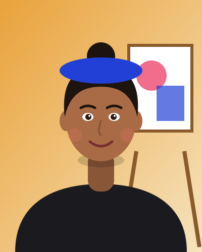

À propos de Léa
Peindre ce que Douala fait de la lumière.

Démarche
Léa part de croquis pris sur le port, dans les marchés et au bord de l’Estuaire. Elle les transforme en grandes compositions, par couches successives de peinture diluée, jusqu’à obtenir la profondeur recherchée.
Trois piliers
La matière
Huile et acrylique sur toile de lin, préparée à l’atelier.
La couleur
Des palettes limitées : bleus profonds, ocres, rouges chauds.
Les lieux
Le port, les ruelles d’Akwa, les nuits sur l’estuaire.
Parcours
- 2014 — Diplôme de l’Institut des Beaux-Arts de Nkongsamba
- 2021 — Exposition collective « Regards croisés », Yaoundé
- 2023 — Salon Africain de la Peinture, Abidjan
- 2025 — « Lumières de l’Estuaire », Galerie Doual’Art, Douala